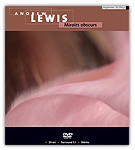

Date of composition: 2003
Duration: 14:49
Format: fixed medium sound (stereo, also 8ch & 5.1 versions)
Premiere: 30 October 2003, Bangor, Wales (UK)
Electroacoustic WALES
Powis Hall, Bangor University
Recording (5.1 and stereo): Andrew Lewis 'Miroirs obscurs', audio DVD, empreintes DIGITALes, IMED 0789, 2007

Excerpt
Programme note: (download as PDF)
Llanddwyn Skies
– to Christian Calon –
Spring equinox: day and night in perfect symmetry. Dawn: sun and moon share a cloudless sky, suspended at opposite ends of the unseen balance, each a mirror of the other: sun pale as moonlight, moon lit red with sun's promise. The sea too is a mirror, a still and polished mist, air and water indistinguishable, while beyond Llanddwyn Island there is no horizon, so that the land itself seems projected into empty space, as if joining in the cosmic dance. In the forest, the birds offer their extravagances heavenwards, while high above them heaven's distant replies are the songs of the metal birds, whose spectral sighs set the air in motion above a motionless sea. The moon sinks – this will be the sun's day.
Llanddwyn/Newborough, April 2003
Llanddwyn Skies is based mainly on recordings made at the time of the an unseasonably warm spring equinox in 2003, and tries to capture the solitude and stillness of dawn in Newborough Forest and on nearby Llanddwyn Island. There was a sense at the time that the wonderful tranquillity and peace of the moment was a result of many forces held in perfect balance: day/night, sun/moon, sea/sky, birds/planes: much of the material is of birdsong and other sounds in the forest which borders the seashore at Newborough, and since the constant presence of jets overhead was not only inescapable, but also highly characteristic of the place, it seemed natural that they became a part of the material of the piece. The sea sounds were all recorded on Llanddwyn Island.
Llanddwyn Skies was composed in the Electroacoustic Music Studios of the University of Wales Bangor in the spring and early summer of 2003.